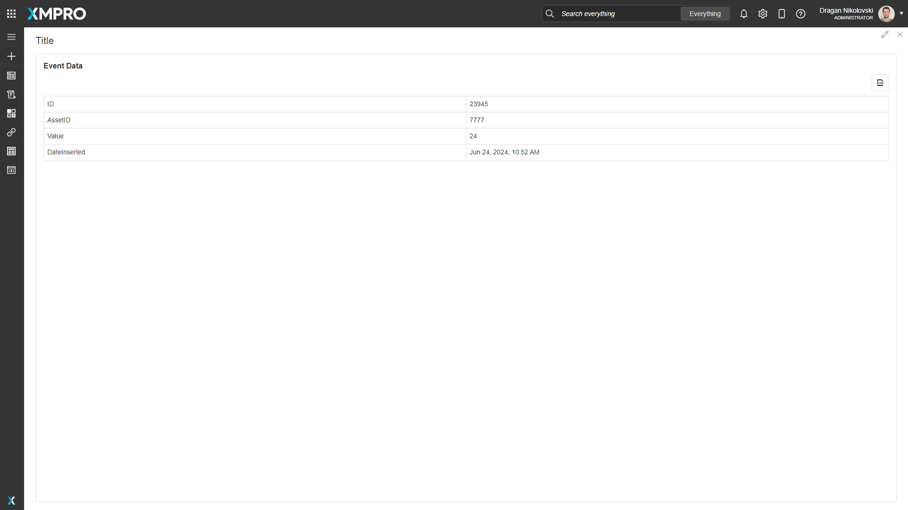

Alert Event Data
The conditions that gave rise to the alert, i.e. the data received by the Data Stream. If "Log Data On All Occurrences" is checked in the Rule, this data will be updated as new data is received.
 Fig 1: Event Data for an Alert
Alert Event Data Properties
Appearance
Common Properties
The visibility property is common to most Blocks;
See the Common Properties article for more details on common appearance properties.
Title
Optional text that shows at the top of the block and defaults to "Event Data".
Behavior
Alert ID
Supply an Alert Identifier and its Event Data is displayed when the Page is opened.
Allow Export to Excel
This determines if the user can export the grid as an Excel file.
Last modified: June 19, 2025